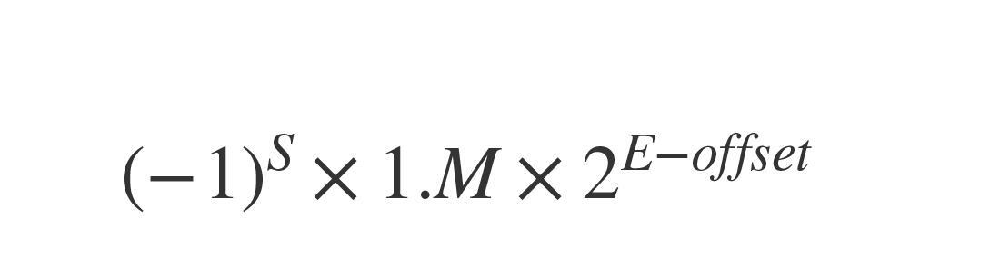

浮点型
和使用广泛的整型相比，浮点型的使用场景就相对聚焦了，主要集中在科学数值计算、图形图像处理和仿真、多媒体游戏以及人工智能等领域。我们这一部分对于浮点型的学习，主要是讲解Go语言中浮点类型在内存中的表示方法，这可以帮你建立应用浮点类型的理论基础。
浮点型的二进制表示
要想知道Go语言中的浮点类型的二进制表示是怎样的，我们首先要来了解 IEEE 754标准。
IEEE 754是IEEE制定的二进制浮点数算术标准，它是20世纪80年代以来最广泛使用的浮点数运算标准，被许多CPU与浮点运算器采用。现存的大部分主流编程语言，包括Go语言，都提供了符合IEEE 754标准的浮点数格式与算术运算。
IEEE 754标准规定了四种表示浮点数值的方式：单精度（32位）、双精度（64位）、扩展单精度（43比特以上）与扩展双精度（79比特以上，通常以80位实现）。后两种其实很少使用，我们重点关注前面两个就好了。
Go语言提供了float32与float64两种浮点类型，它们分别对应的就是IEEE 754中的单精度与双精度浮点数值类型。不过，这里要注意，Go语言中没有提供float类型。这不像整型那样，Go既提供了int16、int32等类型，又有int类型。换句话说，Go提供的浮点类型都是平台无关的。
那float32与float64这两种浮点类型有什么异同点呢？
无论是float32还是float64，它们的变量的默认值都为0.0，不同的是它们占用的内存空间大小是不一样的，可以表示的浮点数的范围与精度也不同。那么浮点数在内存中的二进制表示究竟是怎么样的呢？
浮点数在内存中的二进制表示（Bit Representation）要比整型复杂得多，IEEE 754规范给出了在内存中存储和表示一个浮点数的标准形式，如下：
<sheet sheet-id="FKllrP" token="QYbJsKyC8hSmaGtfGpuckE8Fnzf"></sheet>
我们看到浮点数在内存中的二进制表示分三个部分：符号位、阶码（即经过换算的指数），以及尾数。这样表示的一个浮点数，它的值等于：

其中浮点值的符号由符号位决定：当符号位为1时，浮点值为负值；当符号位为0时，浮点值为正值。公式中offset被称为阶码偏移值，这个我们待会再讲。
我们首先来看单精度（float32）与双精度（float64）浮点数在阶码和尾数上的不同。 这两种浮点数的阶码与尾数所使用的位数是不一样的，你可以看下IEEE 754标准中单精度和双精度浮点数的各个部分的长度规定：
| 浮点类型 | 符号位(bit位数) | 阶码(bit位数) | 阶码偏移量 | 尾数(bit位数) |
|---|---|---|---|---|
| 单精度(float32) | 1 | 8 | 127 | 23 |
| 双精度(float64) | 1 | 11 | 1023 | 53 |
我们看到，单精度浮点类型（float32）为符号位分配了1个bit，为阶码分配了8个bit，剩下的23个bit分给了尾数。而双精度浮点类型，除了符号位的长度与单精度一样之外，其余两个部分的长度都要远大于单精度浮点型，阶码可用的bit位数量为11，尾数则更是拥有了52个bit位。
接着，我们再来看前面提到的“阶码偏移值”，我想用一个例子直观地让你感受一下。 在这个例子中，我们来看看如何将一个十进制形式的浮点值139.8125，转换为IEEE 754规定中的那种单精度二进制表示。
步骤一：我们要把这个浮点数值的整数部分和小数 部分，分别转换为二进制形式（后缀d表示十进制数，后缀b表示二进制数）：
- 整数部分：139d => 10001011b；
- 小数部分：0.8125d => 0.1101b（十进制小数转换为二进制可采用“乘2取整”的竖式计算）。
这样，原浮点值 139.8125d 进行二进制转换后，就变成 10001011.1101b。
步骤二：移动小数点，直到整数部分仅有一个1， 也就是10001011.1101b => 1.00010111101b。我们看到，为了整数部分仅保留一个1，小数点向左移了7位，这样指数就为7，尾数为00010111101b。
步骤三：计算阶码。
IEEE754规定不能将小数点移动得到的指数，直接填到阶码部分，指数到阶码还需要一个转换过程。对于float32的单精度浮点数而言，阶码 = 指数 + 偏移值。偏移值的计算公式为2^(e-1)-1，其中e为阶码部分的bit位数，这里为8，于是 单精度浮点数的阶码偏移值 就为2^(8-1)-1 = 127。这样在这个例子中，阶码 = 7 + 127 = 134d = 10000110b。float64的双精度浮点数的阶码计算也是这样的。
步骤四：将符号位、阶码和尾数填到各自位置，得到最终浮点数的二进制表示。 尾数位数不足23位，可在后面补0。
| 符号位 | 阶码 | 尾数 |
|---|---|---|
| 0 | 10000110 | 00010111101(000000000000) |
这样，最终浮点数 139.8125d 的二进制表示就为 0b_0_10000110_00010111101_000000000000。
最后，我们再通过Go代码输出浮点数 139.8125d 的二进制表示，和前面我们手工转换的做一下比对，看是否一致。
func main() {
var f float32 = 139.8125
bits := math.Float32bits(f)
fmt.Printf("%b\n", bits)
}
在这段代码中，我们通过标准库的math包，将float32转换为整型。在这种转换过程中，float32的内存表示是不会被改变的。然后我们再通过前面提过的整型值的格式化输出，将它以二进制形式输出出来。运行这个程序，我们得到下面的结果：
1000011000010111101000000000000
我们看到这个值在填上省去的最高位的0后，与我们手工得到的浮点数的二进制表示一模一样。这就说明我们手工推导的思路并没有错。 而且，你可以从这个例子中感受到，阶码和尾数的长度决定了浮点类型可以表示的浮点数范围与精度。因为双精度浮点类型（float64）阶码与尾数使用的比特位数更多，它可以表示的精度要远超单精度浮点类型，所以在日常开发中，我们使用双精度浮点类型（float64）的情况更多，这也是Go语言中浮点常量或字面值的默认类型。 而float32由于表示范围与精度有限，经常会给开发者造成一些困扰。比如我们可能会因为float32精度不足，导致输出结果与常识不符。比如下面这个例子就是这样，f1与f2两个浮点类型变量被两个不同的浮点字面值初始化，但逻辑比较的结果却是两个变量的值相等。至于其中原因，我将作为思考题留给你，你可以结合前面讲解的浮点类型表示方法，对这个例子进行分析：
var f1 float32 = 16777216.0
var f2 float32 = 16777217.0
fmt.Println(f1 == f2) // true
看到这里，你是不是觉得浮点类型很神奇？和易用易理解的整型相比，浮点类型无论在二进制表示层面，还是在使用层面都要复杂得多。即便是浮点字面值，有时候也不是一眼就能看出其真实的浮点值是多少的。下面我们就接着来分析一下浮点型的字面值。
字面值与格式化输出
Go浮点类型字面值大体可分为两类，一类是 直白地用十进制表示的浮点值形式。这一类，我们通过字面值就可直接确定它的浮点值，比如：
- 3.1415
.15 // 整数部分如果为0，整数部分可以省略不写
81.80
// 小数部分如果为0，小数点后的0可以省略不写
另一类则是 科学计数法形式。采用科学计数法表示的浮点字面值，我们需要通过一定的换算才能确定其浮点值。而且在这里，科学计数法形式又分为十进制形式表示的，和十六进制形式表示的两种。
我们先来看十进制科学计数法形式的浮点数字面值，这里字面值中的e/E代表的幂运算的底数为10：
6674.28e-2 // 6674.28 * 10^(-2) = 66.742800
.12345E+5 // 0.12345 * 10^5 = 12345.000000
接着是十六进制科学计数法形式的浮点数：
0x2.p10 // 2.0 * 2^10 = 2048.000000
0x1.Fp+0 // 1.9375 * 2^0 = 1.937500
这里，我们要注意，十六进制科学计数法的整数部分、小数部分用的都是十六进制形式，但指数部分依然是十进制形式，并且字面值中的p/P代表的幂运算的底数为2。 知道了浮点型的字面值后，和整型一样，fmt包也提供了针对浮点数的格式化输出。我们最常使用的格式化输出形式是%f。通过%f，我们可以输出浮点数最直观的原值形式。
var f float64 = 123.45678
fmt.Printf("%f\\n", f) // 123.456780
我们也可以将浮点数输出为科学计数法形式，如下面代码：
fmt.Printf("%e\\n", f) // 1.234568e+02
fmt.Printf("%x\\n", f) // 0x1.edd3be22e5de1p+06
其中%e输出的是十进制的科学计数法形式，而%x输出的则是十六进制的科学计数法形式。
十进制下，float32的有效数字大约是6位，float64的有效数字大约是15位。绝大多数情况下，应优先选用float64，因为除非格外小心，否则float32的运算会迅速累积误差。另外，float32能精确表示的正整数范围有限